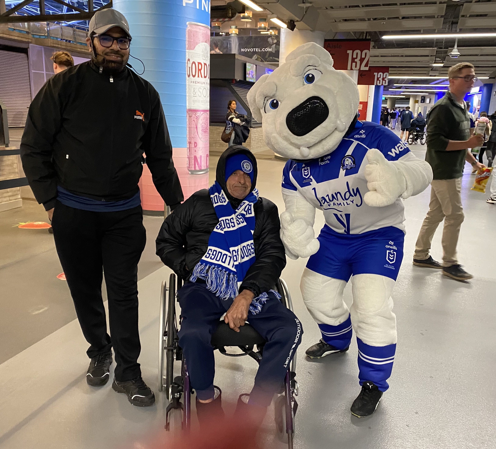
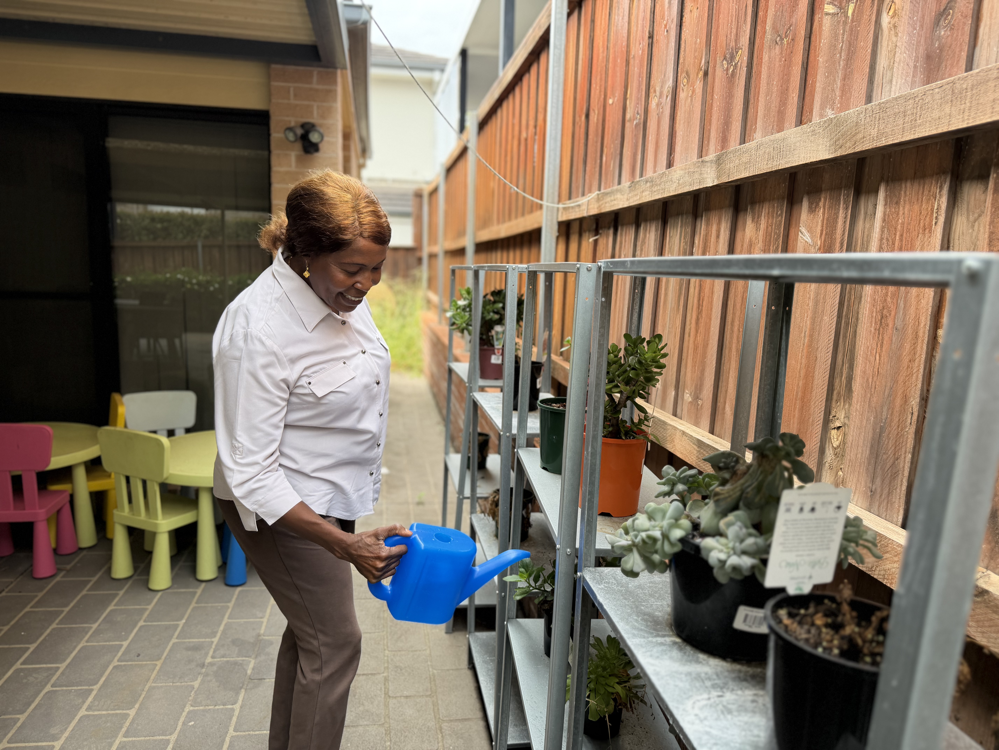
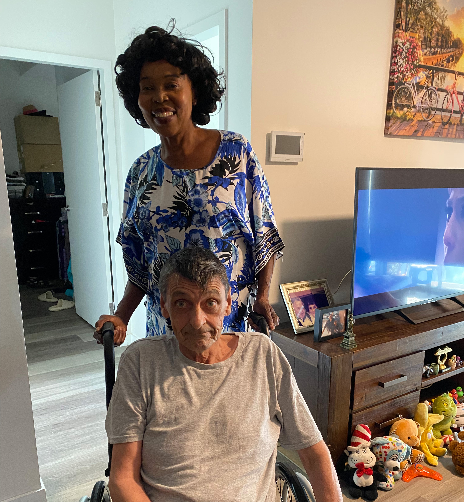
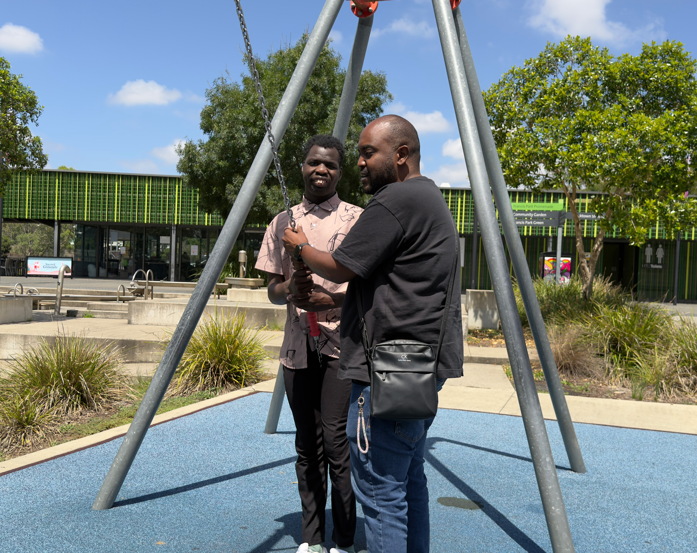
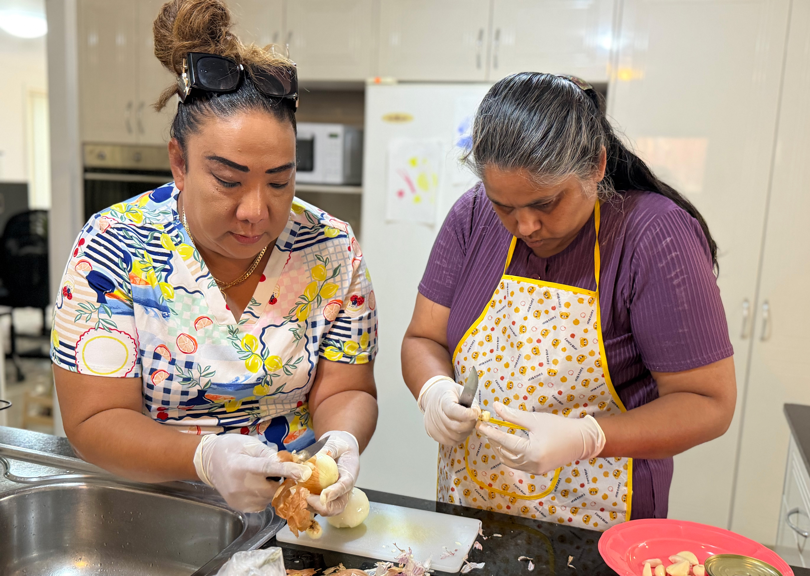
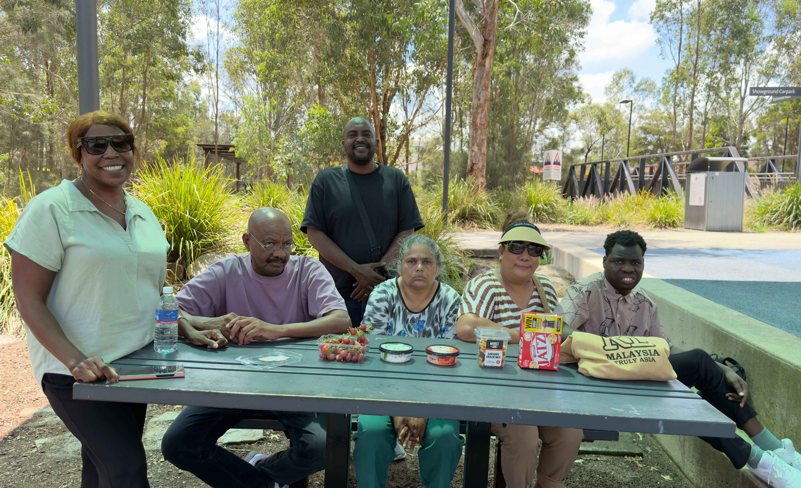

Empowering you with culturally inclusive, person-centred NDIS supports to live well and achieve your goals.

At New Life Adventure Disability (NLA), we provide a wide range of NDIS services designed to support participants to live with greater independence, confidence and connection.
Our approach combines in-house expertise with trusted partnerships across the health, disability and community sectors. This collaborative model allows us to deliver personalised support while ensuring participants have access to the right professionals and services for their needs.
Whether you require daily support, therapy coordination, community participation or specialised care, our team works closely with you to build the right support network around your goals.

New Life Adventure Disability Support was built on a simple belief that people living with disability deserve support that is clinically sound, deeply personal, and built around who they actually are. Doctor-led and clinically grounded, we support individuals of all ages across every level of complexity. Our strength lies in bringing clinical expertise, cultural understanding, and genuine human connection together under one roof.

We provide intensive advocacy and hands-on coordination for participants facing mental health, housing, medical, or crisis-related barriers. We offer coordination at every level of complexity from activating new plans and connecting with providers, to navigating SIL and SDA applications, Change of Circumstances submissions and plan reassessments. Our Recovery Coaches support participants with psychosocial disability to build capacity and work toward their recovery goals. Culturally informed coordination available across diverse communities.
Registered to deliver complex, high-risk daily supports including complex bowel care, enteral feeding, tracheostomy management, ventilator support, subcutaneous injections, dysphagia management, and complex wound care — delivered by Registered Nurses and trained workers under clinical oversight and in full compliance with NDIS Practice Standards.


We specialise in supporting participants with complex needs, including co-occurring mental health conditions, psychosocial disability, and challenging behaviour working alongside participants, families, and clinical teams to build stability and meaningful progress.
Tailored personal care for participants across all support levels from everyday assistance with self-care, hygiene, grooming, and dressing, through to high-intensity personal care for participants with complex health needs requiring specially trained workers.


We support participants to engage in social, recreational, and skill-building activities both within our day programs and across the wider community fostering connection, confidence, and belonging.
Led by experienced doctors, our in-house clinical team ensures proactive health management from hospital to home specialising in complex discharge planning, post-acute transition, and ongoing clinical oversight to keep participants safe and stable in the community.


We support participants to live independently with daily living assistance, skills development, and tailored around-the-clock support aligned to each participant's goals.
Flexible short-term and in-home respite for participants and their families giving carers the break they need while participants continue to receive safe, quality support.


Our Registered Behaviour Support Practitioners deliver individualised assessments and positive behaviour support plans that reduce restrictive practices and promote quality of life in full compliance with NDIS requirements.
We coordinate access to NDIS-funded allied health including Occupational Therapy, Physiotherapy, Speech Pathology, Dietetics, Psychology, and Exercise Physiology ensuring timely, goal-aligned therapeutic support.

Our Registered Nurses deliver community-based clinical care including wound management, medication administration, catheter and stoma care, health monitoring, and chronic condition support keeping participants safely in their homes and communities.
We work with participants to develop practical everyday life skills, including budgeting, cooking, communication, personal organisation, and daily living routines — building the foundations for greater independence.
We support participants through major life transitions from school leaving to moving into independent living with tailored planning, skill building, and coordinated support every step of the way.
We support participants to travel safely with Disability Accessible Vehicle to appointments, community activities, and daily destinations building confidence and independence in getting around.
Supporting NDIS participants to explore, prepare for, and sustain meaningful employment building workplace readiness, confidence, and the skills to achieve vocational goals.
We assist participants with essential household tasks including cleaning, laundry, meal preparation, and home organisation supporting a safe, comfortable, and well-maintained living environment.
We assist participants to access, secure, and maintain suitable housing navigating tenancy agreements, liaising with landlords, and connecting participants with appropriate accommodation options aligned to their NDIS goals.
Our multilingual team delivers culturally safe, responsive care respecting participants' language, cultural background, and personal values.
We are committed to delivering high-quality, person-centred supports that empower you to live independently and confidently.
Every support is tailored around your goals and aspirations.
We respect diversity and provide inclusive, culturally aware services.
We make navigating supports simple and easy to understand.
Responsive services that adapt to your changing needs.
Whether you're new to the NDIS or reviewing your supports, we're here to help you move forward.